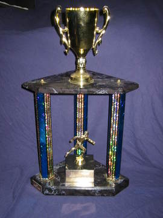

History
The Apocalyptic Squiddies have a long history. This page is a brief description of our team. We also have a page that describes our team in much more detail.

1999 - The team is founded. Our team is to be defined thanks to a campsite beside the Bust Loose team. Sociables!
2000 through 2002 - The foundation is poured. Our team develops into a dozen core members and many fringe members and fans.
2003 - Our fifth year of participation. We celebrated in style.
2004, 2005 - Solidifying our reputation as the team having the most fun.
2006 - A dominating victory in the battle for best campsite. Most importantly, the Squids acheive a milestone for fundraising. Over $10,000 has been raised by the Squids to support the cause.
2007 - This will be our 9th year at the relay. Go Squids!